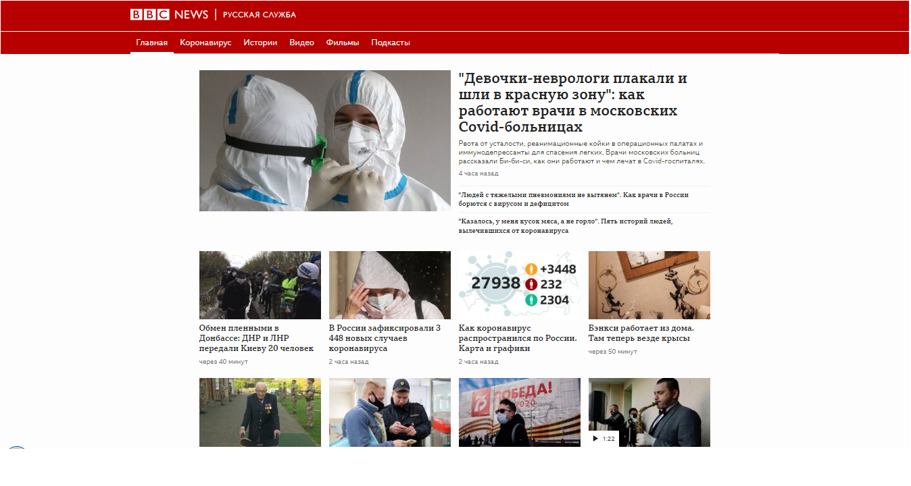

.png)


Что такое гиперссылка?
Гиперссылки — одно из самых интересных нововведений Интернета. Они были особенностью Сети с самого начала, но именно они превращают Интернет в Интернет. Они позволяют нам связывать наши документы с любым другим документом (или ресурсом), с которым мы хотим. С их помощью мы также можем связывать документы с их конкретными частями и делать приложения доступными на простом web-адресе (сравните это с локальными приложениями, которые должны быть установлены, и другими такими же вещами). Почти любой web-контент может быть преобразован в ссылку, так что когда вы кликаете по ней (или иным образом активируете), она заставляет web-браузер перейти на другой web-адрес (
Например, домашняя страница BBC News Russia содержит большое количество ссылок, которые указывают не только на множество новостей, но и на различные области сайта (меню), страницы входа / регистрации (пользовательские инструменты) и многое другое.
Анатомия ссылки
Простая ссылка создаётся путём обёртывания текста, который вы хотите превратить в ссылку, в элемент
<p>Я создал ссылку на <a href="https://yandex.ru"> домашнюю страницу Яндекс.</a>. </p>
Результат отображения браузером
Я создал ссылку на домашнюю страницу Яндекс.
Другим атрибутом, который вы можете добавить к своим ссылкам,
является —
<p>Я создал ссылку на <a href="https://yandex.ru" title="Лучшее место для поиска информации"> домашнюю страницу Яндекс. </a> </p>
Результат отображения браузером (описание появится, если навести курсор на ссылку):
Я создал ссылку на домашнюю страницу Яндекс.
Активное изучение: создаём собственную ссылку
Время упражнения: мы хотели бы, чтобы вы создали любой HTML-документ в текстовом редакторе на своём компьютере.
- Попробуйте добавить в тело HTML один или несколько абзацев или другие элементы, о которых вы уже знаете.
- Теперь превратите некоторые фрагменты документа в ссылки.
- Добавьте ссылкам атрибут
<title> .
Ссылки—блоки
Как упоминалось ранее, вы можете превратить любой элемент в ссылку, даже блочный элемент. Если у вас есть изображение, которые вы хотели бы превратить в ссылку, вы можете просто поместить изображение между тегами
<a href=""https://yandex.ru" "> <img src="assets/img/yandex.png alt="логотип Яндекс с ссылкой на их домашнюю страницу"> </a>
Результат отображения браузером:

Практика написания хороших ссылок
При написании ссылок рекомендуется следовать некоторым правилам. Давайте рассмотрим их.
Используйте четкие формулировки описания ссылок. На вашей странице легко добавить ссылки. Но этого не совсем достаточно. Мы должны сделать наши ссылки доступными для всех читателей, независимо от их возможностей и инструментов просмотра страницы, которые они предпочитают. Например:
- Пользователям программ читающих с экрана нравится переходить по ссылкам на странице, читая адрес ссылки в тексте.
- Поисковые системы используют текст ссылки для индексирования файлов, поэтому рекомендуется включать ключевые слова в текст ссылки, чтобы эффективно описывать, куда ведет ссылка.
- Пользователи часто бегло просматривают страницу, не читая каждое слово, и их глаза будут привлечены к тексту, который выделяется, например, ссылки. Им будет полезно описание того, куда ведет ссылка.
Хороший текст ссылки:
Результат отображения браузером:
<p><a href="https://yandex.ru" title="Скачать Яндекс браузер"> Скачать Яндекс браузер. </a></p>
Плохой текст ссылки:
Результат отображения браузером:
чтобы скачать Яндекс браузер
<a href="https://yandex.ru" title="Нажми сюда"> Нажми сюда </a> чтобы скачать Яндекс браузер </p>
Советы:
- Не пишите URL-адрес как часть текста ссылки. URL-адреса выглядят сложными, а звучат ещё сложнее, когда программы чтения с экрана читают их по буквам.
- Не пишите «ссылка» или «ссылки на» в тексте ссылки — это лишнее. Программы чтения с экрана сами проговаривают, что есть ссылка. На экране пользователи также видят, что есть ссылка, потому что ссылки, как правило, оформлены в другом цвете и подчеркнуты (подчёркивая ссылки, вы соблюдаете правила хорошего тона, поскольку пользователи привыкли к этому).
- Следите за тем, чтобы текст ссылки был как можно короче. Длинный текст ссылки особенно раздражает пользователей программ чтения с экрана, которым придётся услышать всё, что написано.
- Минимизируйте случаи, когда несколько копий одного и того же текста ссылок указывает на разные страницы. Это может вызвать проблемы для пользователей программ чтения с экрана, которые часто вызывают список ссылок — несколько ссылок, помеченных как «нажмите здесь», «нажмите здесь», «нажмите здесь», будут путать.
Создавая ссылки на не HTML ресурсы — добавляйте описание. Когда вы создаёте ссылку на файл, нажав на который можно загрузить документ PDF или Word или открыть просмотр видео, прослушивание аудио файла или перейти на страницу с другим, неожиданным для пользователя результатом (всплывающее окно или загрузка Flash-фильма), добавляйте четкую формулировку, чтобы уменьшить путаницу. Отсутствие описания может раздражать пользователя. Приведем пример: Если вы используете соединение с низкой пропускной способностью и вдруг нажмёте на ссылку без описания, начнётся загрузка большого файла. Если у вас нет установленного Flash-плеера и вы нажмёте ссылку, то внезапно перейдёте на страницу с Flash-контентом. Посмотрите на примеры, чтобы увидеть, как добавить описание:
<p><a href="http://www.example.com/video-stream/"> Посмотреть видео (видео откроется в отдельном окне, HD качество) </a></p> <p><a href="http://www.example.com/car-game"> Играть в гонки (необходим Flash) </a></p>
Используйте атрибут
<a href="https://download.mozilla.org/?product=firefox-39.0-SSL&os=win&lang=en-US" download="firefox-39-installer.exe"> Скачать Firefox 39 для Windows </a>